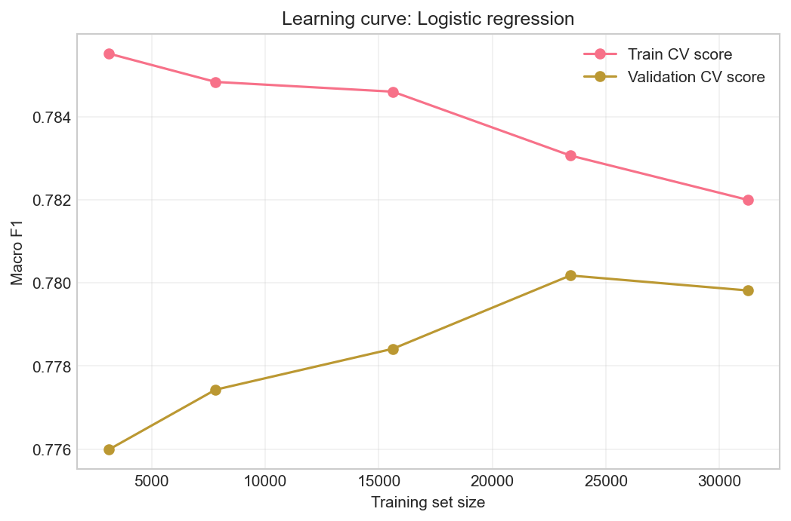
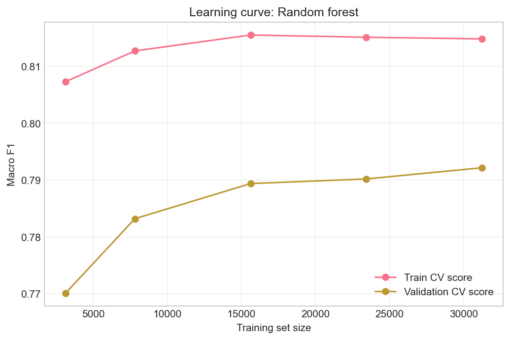
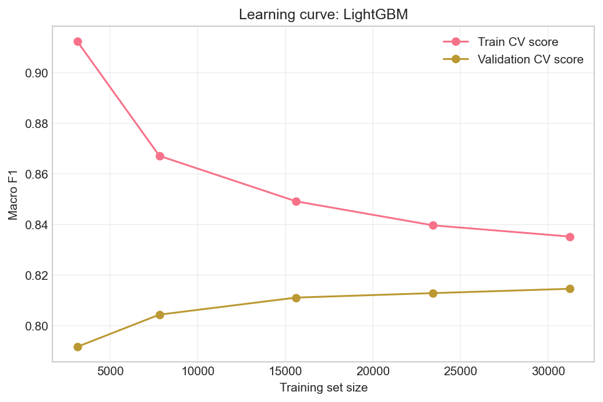
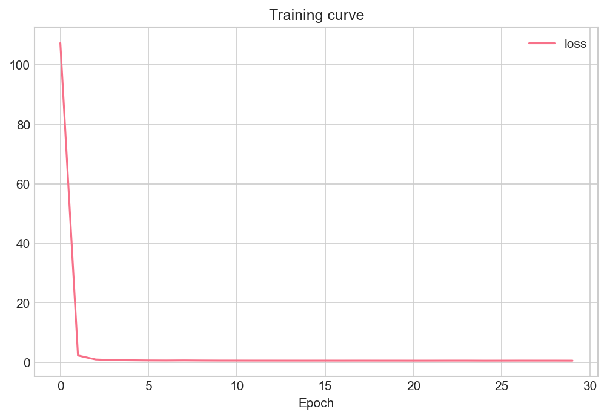
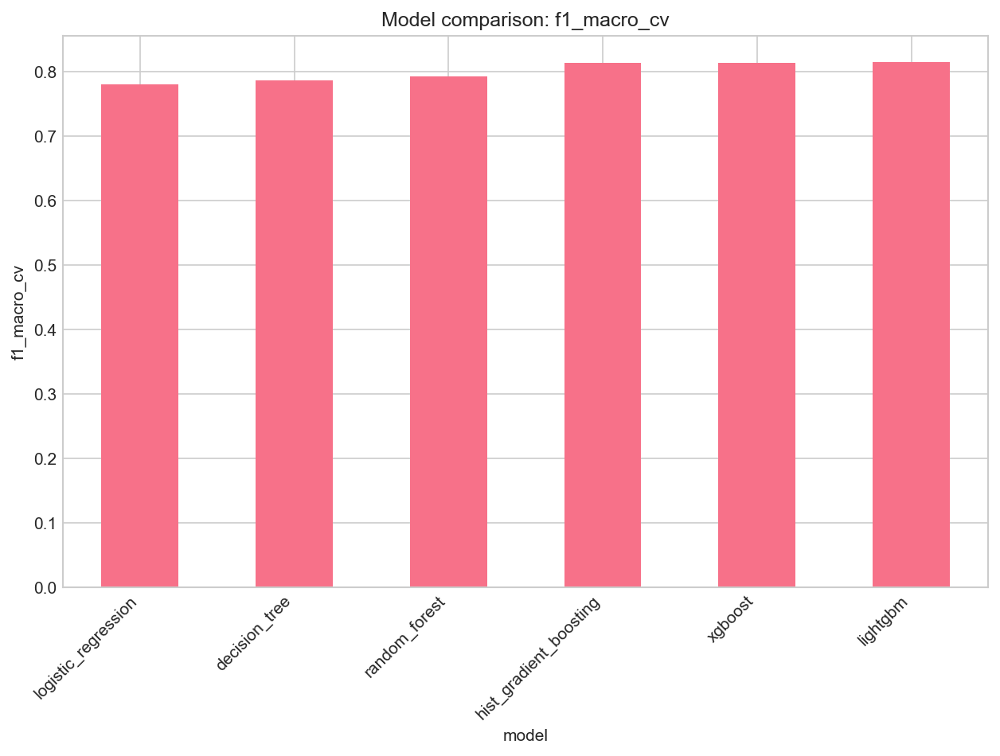

4 The Modeling Journey
With the data understood, I treated modeling as a sequence of experiments - not a single “best model” hunt. I started simple, added complexity, and let cross-validated macro F1 on the training split decide the winner. The test set stayed locked away until the end.
4.1 Building a leakage-safe foundation
4.1.1 Train/test split
I used a stratified 80/20 split: 39,050 training and 9,763 test records. Positive rates aligned at 23.9% in both splits, which was exactly what I wanted.
| Split | n | Positive rate |
|---|---|---|
| Train | 39,050 | 0.239 |
| Test | 9,763 | 0.239 |
4.1.2 Preprocessing inside the pipeline
Preprocessing lives in src/adult_income_ml/pipelines.py:
- Numeric: median imputation + standardisation
- Categorical: mode imputation + one-hot encoding (
handle_unknown="ignore")
The preprocessor is fitted only on training folds inside each CV split (or on the full training set for the final fit). The test set never touches imputation statistics, scaling, or hyperparameter selection. That discipline sounds tedious until you have seen leakage inflate scores once.
4.1.3 Tuning protocol
- Search:
RandomizedSearchCV(up to 20 iterations per model) - CV: 5 folds on training data
- Primary scoring: macro F1
- Candidates: dummy baseline, logistic regression, decision tree, random forest, HistGradientBoosting, XGBoost, LightGBM, sklearn MLP, PyTorch embedding MLP
Per-model learning curves were not exported for every family; CV scores and best hyperparameters carry the comparison.
4.2 Did more data help? Learning curves
Before comparing final CV scores, I wanted to see whether models were still gaining from more training rows or starting to plateau. I plotted learning curves on the training split only (macro F1 vs training set size, 5-fold CV).

Logistic regression improved steadily with more data but plateaued below the boosting models. That told me a linear decision boundary was not the main bottleneck - data volume was not the issue, capacity was.


Random forest and LightGBM both benefited from additional rows, with LightGBM holding a consistent edge at every training size. That reinforced my plan to focus on boosting for the final selection.
4.3 Experiment 1 - Logistic regression
I always start with a linear baseline. Logistic regression is interpretable and fast, and it sets a floor for more complex models.
| Metric | Value |
|---|---|
| CV macro F1 (train only) | 0.780 |
Best hyperparameters: C=1.0, class_weight=None, max_iter=1000. Respectable, but clearly below what nonlinear ensembles would deliver.
4.4 Experiment 2 - Decision tree
A single tree trades a bit of interpretability structure for nonlinear splits.
| Metric | Value |
|---|---|
| CV macro F1 (train only) | 0.787 |
Best settings: max_depth=10, min_samples_leaf=10. A small bump over logistic regression, still not competitive with ensembles.
4.5 Experiment 3 - Random forest
Bagging many trees usually stabilises variance on tabular data.
| Metric | Value |
|---|---|
| CV macro F1 (train only) | 0.793 |
Best settings: n_estimators=200, max_depth=None, min_samples_leaf=5. A strong classical baseline - but boosting was about to pull ahead.
4.6 Experiment 4 - Gradient boosting (where things clicked)
I tuned three boosting implementations. This is where the project turned a corner.
| Model | CV macro F1 (train only) |
|---|---|
| HistGradientBoosting | 0.814 |
| XGBoost | 0.814 |
| LightGBM | 0.815 |
LightGBM achieved the highest cross-validated macro F1 and became my selected model. Best parameters: n_estimators=200, max_depth=5, learning_rate=0.1, num_leaves=31.
HistGradientBoosting and XGBoost were effectively tied behind it; boosting families clearly outperformed linear and single-tree models on this task.
4.7 Experiment 5 - Neural networks (worth trying, not winning)
I ran two neural approaches on the held-out test set after separate training - reported for comparison, not for selection.
| Model | Test macro F1 | Test ROC-AUC |
|---|---|---|
| sklearn MLP (one-hot pipeline) | 0.791 | 0.914 |
| PyTorch embedding MLP | 0.559 | 0.588 |
The sklearn MLP was competitive with classical models (test macro F1 0.791) but still below the LightGBM I would evaluate properly in Chapter 4. The PyTorch embedding MLP underperformed substantially (test macro F1 0.559) - likely limited tuning, class imbalance, and tabular structure favouring trees.

The training curve flattened without delivering test performance. I filed that under “interesting negative result” rather than “pursue further in this repo.”
4.8 Cross-model comparison - making the call
Figure 10 summarises CV macro F1 on the training split for all tuned classical models. LightGBM leads at 0.815, followed by XGBoost and HistGradientBoosting (~0.814). Selection is based on this metric only - not test performance.

| Model | CV macro F1 |
|---|---|
| logistic_regression | 0.780 |
| decision_tree | 0.787 |
| random_forest | 0.793 |
| hist_gradient_boosting | 0.814 |
| xgboost | 0.814 |
| lightgbm | 0.815 |
At this point I had a winner on paper. The real question was whether 0.815 CV macro F1 would hold on the single held-out test pass - and what I would find when I looked under the hood.